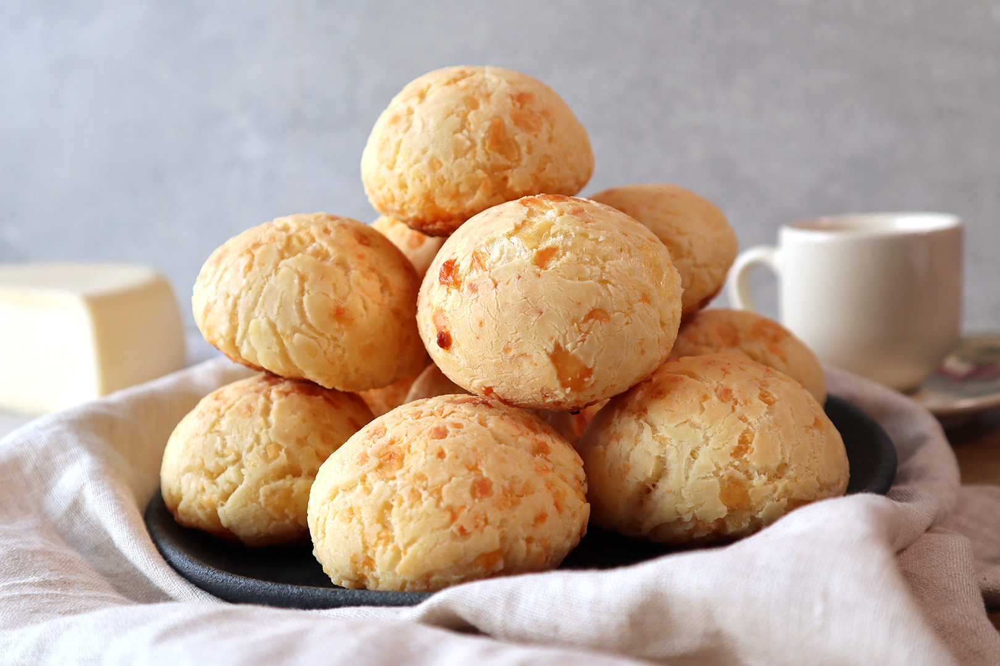

Odin Recipes: Cheese bread

Description:
Whether to make it for breakfast or an afternoon snack, a recipe for easy and delicious cheese bread with sweet tapioca is always welcome.
Originally from Minas Gerais and loved by Brazilians, this cheese bread uses sweet cassava starch in its preparation, making the balls have
an elastic dough that stretches like melted cheese! If you are making it to eat early in the morning with a cup of coffee, you can prepare
the dough the night before and store it in the refrigerator, leaving it to bake before eating.
This way, it will be warm and the whole house
will have the joy of waking up to the smell of warm cheese bread coming out of the oven.
This recipe is very easy to prepare, anyone can make it, regardless of their level of experience in the kitchen. It makes 40 servings! See
how to make it and get ready to have a new favorite recipe at snack time!
Ingredients
- 500g tapioca flour
- 250ml whole milk
- 1 shallow/full spoon of salt
- 1 full plate (350g) of half cured cheese and/or grated mozzarella
(The more cheese, the better)
- 1 or 2 egg
- 1/2 cup of oil
- 1 pack of grated parmesan cheese
How to prepare:
Cooking time: 1h
- First, pour the milk and oil in a pan to heat, turn off the heat immediatelly when it starts to boil (the milk will make bubbles).
- In a big bowl, pour the tapioca flor and the salt, and mix well, then, pour the content of the still hot pan, mix well, first with a spoon then with your hands.
- Next, put the grated cheese and a little bit of the plate cheese and also 1 egg, continue mixing well.
- Put the rest of the cheese and verify if the dough is with good texture, not too oily neither too dry.
- If you think it's too dry, add another egg, if it's too oily, add a bit more flour.
- The dough shouldn't stick to your hand or the bowl.
- Taste the flour and see if it's enough salt (it's to your liking).
- Now just make some small balls and put them in the baking dish, leaving a little space between the breads.
- It's not necessary to oil the baking dish.
- Leave it on the oven in medium heat (230C) until it becomes yellowish/brown.
That's it!, easy, isn't it?
Home page